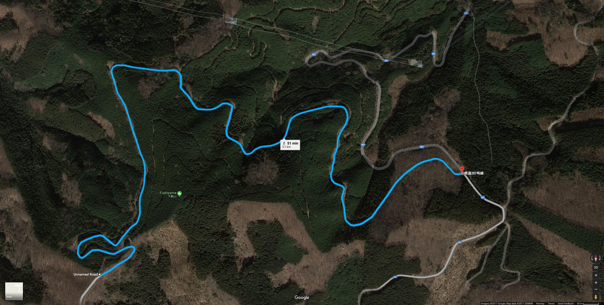

Gunma Prefecture
Gunma Prefecture, located in the mountainous Kanto region, is renowned not only for its breathtaking natural landscapes but also as a hotbed for street racing. The rural, winding roads that cut through the mountains are famous among racers for their challenging curves, steep climbs, and sharp hairpin turns—making the region an iconic destination for both experienced drivers and adrenaline seekers.
The most famous of these racing routes is Akina, a mountain pass that has earned its reputation as one of the most difficult tracks in the region. Known for its sharp corners and narrow roads, Akina is a proving ground where only the most skilled drivers can thrive. Other famous passes such as Irohazaka and Usui offer similarly intense challenges, with racers navigating treacherous conditions to maintain their speed and control.
For years, Gunma’s roads have been the stage for fierce rivalries between racing teams. From the street-smart local drivers to the well-organized racing teams that travel from all over the country, the region sees a constant flow of high-speed battles. Whether it’s the tight-knit Akina Speed Stars or the more aggressive teams that call the highlands their home, the area has become synonymous with both thrilling victories and crushing defeats.
Beyond the races, the local car culture is deeply embedded in the lives of its residents. Car tuning shops, tire dealers, and performance garages line the streets, each offering services to fine-tune machines for the next race. It’s a culture of innovation and craftsmanship, where the pursuit of speed and precision in driving is just as much a way of life as it is a sport.
Gunma Prefecture’s mountain roads remain a sacred space for those who live for the rush of racing, with the picturesque views and challenging terrain standing as the perfect backdrop for the legends of the road. For racers, the prefecture is not just a location—it’s where skills are honed, rivalries are forged, and the road to victory begins.
Mount Akina

Mount Akina (秋名山 Akina-san) is a mountain located in Takasaki, Gunma Prefecture. The course is famous for it's five consecutive hairpins.
Akina is the home course of the Akina SpeedStars, as well as Bunta and Takumi Fujiwara. Bunta was the fastest driver on Akina for many years, but is no longer active as a street racer and most locals are unaware of him. The deliveries for his tofu business travel through the pass, and he used this to train his son Takumi as a racer. After his racing debut, Takumi became known as "Akina's Eight-Six" and was considered to be the fastest racer on Akina, eventually setting the downhill course record in an untimed run.
Mount Akina is based on Mount Haruna (榛名山 Haruna-san), a dormant stratovolcano in Takasaki, Gunma. Along with Myogi and Akagi, it is one of the "Three Mountains of Jōmō" (上毛三山). Akina Pass is a section of the Jomo-Sanzan Panorama Highway on the north-eastern side of the mountain, which falls within the borders of Shibukawa. In the live action film the Yahikoyama Sky Line in Niigata is used to represent Akina.
Rising majestically in Gunma Prefecture, Mount Akina is more than just a natural landmark—it's the beating heart of the region's street racing culture. Known for its winding, treacherous mountain pass, Akina has become a revered and feared destination for racers seeking to prove their skill and endurance. Its narrow, winding roads with sharp hairpin turns and dramatic elevation changes make it one of the most challenging routes in the entire country, earning it a reputation as a true test for drivers who wish to make their mark.
The road up Akina is a series of twists and turns that require absolute precision. The uphill climb demands powerful acceleration and the ability to navigate through tight corners at high speeds, while the downhill descent tests braking techniques and control. Every curve on Akina is a puzzle, and the slightest miscalculation can lead to disaster. Yet for those who master it, the mountain provides a thrill like no other, offering the perfect environment for street racing battles.
The lower slopes of Akina are lined with dense forests, providing a tranquil atmosphere that contrasts sharply with the high-speed chaos of racing on the upper reaches of the mountain. The road is often foggy in the early mornings or late evenings, adding an extra layer of challenge as visibility becomes limited. These conditions demand not only mechanical mastery but also the sharpest instincts from the drivers who brave its paths.
For generations, Mount Akina has been the site of countless rivalries between local drivers and visiting teams, each aiming to conquer the mountain and establish their dominance. From secretive street races at night to full-blown team battles, Akina’s roads have seen it all. For some, conquering Akina is a rite of passage—an essential milestone in their racing journey that cements their reputation as a top-tier driver.
More than just a physical challenge, Mount Akina holds deep cultural significance for those who race its roads. It is a symbol of resilience, skill, and the relentless pursuit of perfection. With its beautiful yet perilous landscape, Akina stands as a timeless arena where legends are born and the best drivers rise to the occasion.
Mount Akagi

Mount Akagi (赤城山 Akagi-yama) is a mountain in Gunma Prefecture, Japan.
Mount Akagi, along with Myogi and Haruna, is one of the "Three Mountains of Jōmō" (上毛三山), and the cold north winds down from it are called Akagi-oroshi (赤城おろし) or Karakkaze (空っ風).
In Initial D, Akagi serves as the home course of the Akagi RedSuns. Akagi is where the battle between Takumi Fujiwara and Kyoichi Sudo was held which resulted in Takumi blowing up his AE86's engine. Kyoichi later attempted to beat his past rival Ryosuke in the same place, but was unsuccessful after Ryosuke managed to overtake him on the last corner. Keisuke's impromptu battle with Wataru is also held here.
Dominating the skyline of Gunma Prefecture, Mount Akagi is a legendary racing destination known for its breathtaking beauty and the challenge it offers to even the most seasoned drivers. Its winding roads, steep ascents, and sweeping turns make it a favorite among racing teams, who flock to its slopes to push their limits and prove their skills on one of the most demanding tracks in the region.
The road that snakes up Mount Akagi is a test of both precision and speed. Drivers must navigate a series of sharp curves, blind corners, and rapid elevation changes, each requiring perfect control and lightning-fast reflexes. The mountain's terrain is diverse, offering a combination of tight, technical turns and fast, open stretches that reward drivers who can balance raw speed with delicate handling. The contrast between the uphill challenges and the high-speed descents creates a dynamic racing experience, with every corner presenting an opportunity for victory—or disaster.
Mount Akagi’s dense forests and steep slopes add an element of danger to the racing experience. The roads are often shrouded in mist during early mornings or evenings, reducing visibility and heightening the stakes for drivers as they navigate the unforgiving curves. On a clear day, the panoramic views from the mountain are awe-inspiring, but for the racer, the only thing that matters is the road ahead and the challenge it represents.
Racing on Mount Akagi is not just about speed—it’s about control, technique, and the ability to maintain focus through the mountain’s demanding twists and turns. Unlike some other racing routes that might favor power or brute force, Akagi is a place where skillful cornering and smooth execution can make all the difference. The mountain’s combination of technicality and scenic beauty makes it a revered location in the racing community, with many drivers considering it the ultimate proving ground for their abilities.
For those who master Akagi’s roads, the mountain becomes a symbol of their talent and determination. Whether racing alone or in teams, drivers find themselves drawn to the mountain’s challenge time and time again, making Mount Akagi a central piece of the high-stakes racing culture that defines Gunma Prefecture.
Mount Myogi

Mount Myōgi (妙義山 Myōgi-san) is one of the major mountains in the Gunma Prefecture, Japan, located west of Tomioka. It is well known for its rocks weathered into fantastic forms. This famous peak is ranked among Japan's three most noted places of rugged beauty. There are many hiking courses, and when the foliage changes color there are splendid views to be seen.
Mount Myōgi, along with Mount Akagi and Mount Haruna, is one of the "Three Mountains of Jōmō". (Jōmō is an old name for Gunma.)
Mount Myōgi is the home course of the racing team called the Myogi NightKids.
One weakness for drivers on Myogi is that it is a more straight course so cars like the Suzuki Cappuccino and the Mazda MX-5 will fall behind (if not modified/modded lightly)
Nestled in the rugged terrain of Gunma Prefecture, Mount Myogi stands as one of the most revered and challenging racing destinations in the region. Known for its stunning rock formations and winding mountain roads, Myogi offers a unique blend of natural beauty and high-stakes racing challenges. The pass here is notorious for its combination of sharp, narrow turns and steep inclines, making it a proving ground for drivers seeking to test their skills and push their vehicles to the limit.
The road up Myogi is a difficult and relentless series of hairpin curves and sweeping turns that require absolute precision and finesse. Unlike other passes that may emphasize speed or power, racing on Myogi is all about technique. Drivers must navigate its twists with the utmost control, as the steep drops and unpredictable road conditions leave no room for error. Every corner demands a calculated approach, and the slightest misjudgment can send a car careening off the edge or into the unforgiving mountain terrain.
The climb up Myogi’s roads is particularly punishing, with the road often narrowing as it winds through dense forests and rocky cliffs. Fog and mist are common, adding to the challenge and reducing visibility, which only heightens the intensity of the race. As drivers approach the higher altitudes of the mountain, the air thins, and the road steepens, demanding even more from both the car and the driver. For the experienced racer, this is a place to demonstrate not just speed, but the ability to handle extreme conditions with confidence.
Myogi’s reputation has made it a sought-after location for rivalries between street racing teams. From the aggressive, high-speed battles to the quieter, more technical challenges, Mount Myogi offers something for every type of racer. It's a place where control is paramount, and only those with the sharpest instincts and the steadiest hands can rise to the occasion.
Despite its difficulty, Mount Myogi also holds a certain allure for racers who understand that mastering its roads is a true testament to their skill. For many, conquering Myogi is not just about winning races—it's about proving that they have what it takes to thrive under pressure and to tame one of the most challenging routes in all of Gunma. The mountain stands as a symbol of the relentless pursuit of perfection, where every curve, every turn, and every moment on the road is a test of character and capability.
Mount Usui
Rising through the heart of Gunma Prefecture, Mount Usui is a legendary racing pass known for its steep ascents, fast stretches, and dramatic changes in elevation. With its reputation as one of the most challenging routes in the region, Usui draws racers seeking to push their limits on both the uphill and downhill sections of the mountain. The road is infamous for its demanding combination of high-speed straightaways and hairpin turns, making it a true test of both acceleration and precision handling.
The unique aspect of racing on Mount Usui is its dual nature. The road begins with an exhilarating climb, where drivers must summon all their power to handle the steep inclines and tight curves that make the ascent such a challenge. Maintaining high speed while carefully navigating each corner is a true test of a car’s power and a driver’s ability to keep control under pressure. The change in altitude demands skillful management of torque and acceleration, with racers constantly adapting their techniques to the ever-changing road conditions.
Once the summit is reached, the real challenge begins. The downhill descent of Usui is an intense experience, with long, sweeping turns and sharp drops that require expert braking control and an intuitive feel for the road. Racing downhill on Usui is not for the faint of heart; it demands perfect timing and balance, as the risk of losing control increases with every turn. One false move can send a car skidding off the road or into the guardrails, turning what was once a thrilling race into a moment of disaster.
The winding roads of Usui also offer ever-changing scenery, from dense forests to wide, panoramic views, adding to the intensity of the racing experience. Fog is common early in the morning or late at night, further complicating the already difficult terrain. As one of the most popular locations for street racing teams, Usui sees regular battles between some of the fastest and most skilled drivers in the area, making the mountain a hotspot for rivalries and high-stakes showdowns.
For those who conquer Usui, the mountain becomes a symbol of not only raw speed but also masterful control and adaptability. Racing on Usui isn’t just about acceleration or cornering; it’s about the driver’s ability to manage the changing conditions and remain composed in the face of a challenging, unpredictable course. With its combination of speed and precision, Mount Usui stands as a pinnacle of racing in Gunma, where only the most skilled drivers rise to the top.
TOCHIGI
Nestled to the north of Gunma, Tochigi Prefecture offers a unique racing landscape that rivals its neighboring region in both beauty and challenge. Known for its mountainous terrain, Tochigi provides an array of winding roads, sharp turns, and steep inclines that attract street racers seeking a new arena to test their skills. The winding mountain passes of Tochigi, particularly those near the Nikko area, are well-known within the racing community for their technical difficulty and thrilling driving conditions
The roads here are a blend of wide, open stretches and tight, intricate curves, providing a perfect environment for both speed enthusiasts and those who specialize in precision driving. The famed Nikko Iroha-zaka, a twisting mountain road lined with ancient trees, is one of the region's most notorious passes. With its narrow lanes, sharp hairpin turns, and frequent fog, Iroha-zaka offers one of the most difficult challenges for any driver daring to take on its serpentine path. The sharp gradients and lack of guardrails make every race here a battle between driver and mountain, where only the boldest can push their limits without slipping into disaster.
In addition to the mountain roads, Tochigi's diverse landscapes also host more open racing routes, where drivers can stretch their cars’ legs and reach high speeds. These flat-out sections provide a stark contrast to the technical mountain passes, allowing racers to showcase their acceleration and top-end speed. Whether weaving through dense forests or charging along wide-open roads, Tochigi’s unique mix of terrain creates a racing environment unlike any other in the region.
Racing culture in Tochigi is as competitive as it is fierce. The prefecture is home to a number of local racing teams that defend their honor against visitors from Gunma, Saitama, and beyond. These rivalries often play out on the challenging mountain roads, with the roads themselves acting as the final judge of skill. Whether it’s team battles or one-on-one duels, Tochigi’s roads are constantly alive with the sounds of high-performance engines and the screech of tires on sharp corners.
The area also fosters a strong car culture, with numerous garages and tuning shops dotting the region, offering services to fine-tune everything from street racers’ engines to their suspension systems. The atmosphere in Tochigi is one of innovation and passion, where enthusiasts gather to share their knowledge and skills, constantly pushing the limits of what their cars—and themselves—can do.
Tochigi Prefecture is more than just a scenic region—it is a battleground for racers who seek to prove themselves on some of the most unpredictable and thrilling roads in Japan. From the technical difficulty of mountain passes to the exhilarating speed of its open roads, Tochigi offers a unique combination of challenges and rewards, cementing its place as a central hub for street racing in the country.
Momiji Line
Momiji Line (もみじライン Momiji Rain) is the home course of Seven Star Leaf. It is located in Nikko, Tochigi. This is where Project D's first battle in the Tochigi Prefecture is held, notably where Toru attempts to use Takumi's lidless gutter shortcut technique only to fail in doing so.
Important Battles
Racers |
Cars |
Specialization |
|---|---|---|
Takumi Fujiwara vs Toru Suetsugu |
AE86 vs NA6CE |
Downhill |
Keisuke Takahashi bs Atsuro Kawai |
FD3S vs ER34 |
Uphill/Downhill |
Extra information
Tucked away in the heart of Tochigi Prefecture, the Momiji Line is a lesser-known but highly revered road among street racing enthusiasts. Known for its stunning autumn scenery, the road meanders through dense forests, steep mountain slopes, and sharp curves, making it a picturesque yet dangerous route for anyone brave enough to race on it. The Momiji Line offers a rare combination of scenic beauty and technical difficulty, creating the perfect environment for drivers who want to test their skill while surrounded by nature’s grandeur.
The road itself winds its way up through the mountains, offering a series of challenging twists and turns that demand both speed and precision. The tight corners and rapid elevation changes require drivers to have exceptional handling skills, as there is little room for error on this narrow, tree-lined path. One misstep on the Momiji Line could lead to a loss of control, sending drivers tumbling off the road or into the guardrails. For this reason, it has earned a reputation as a place where only the most experienced and confident racers dare to compete.
What makes the Momiji Line particularly unique is its seasonal beauty. During autumn, the road is lined with vibrant red and orange maple leaves, offering breathtaking views that contrast sharply with the high-speed action unfolding on the tarmac. The vibrant colors and the often-damp roads in fall add an extra layer of difficulty to racing here, as drivers must contend with unpredictable conditions that can shift from dry to slippery in an instant.
In addition to the challenging terrain, the Momiji Line also offers moments of respite, with stretches of road that allow for brief acceleration before entering another sharp corner. These moments of high-speed racing are fleeting, however, as the constant change in elevation and the sharpness of the turns keep drivers focused and on edge throughout the entire route.
The Momiji Line is not just a racing venue—it’s a place that brings drivers closer to nature while testing their ability to conquer the road. It is the kind of route where the thrill of the race and the beauty of the surroundings blend together, offering a racing experience that engages both mind and senses. For those who master the Momiji Line, the road becomes a testament to their skill and their ability to handle the unexpected, making it a coveted challenge for anyone looking to prove their worth behind the wheel.
Irohazaka

Nestled in the rugged hills of Tochigi Prefecture, Irohazaka is one of the most famous and challenging mountain passes in Japan, known for its intense curves and dramatic elevation changes. With its narrow, winding road that twists through the dense forests of the Nikko National Park, Irohazaka presents a daunting challenge for any driver. It is a road that demands equal parts power, precision, and finesse—qualities that make it a coveted destination for street racers who seek to test their skill on one of the most unforgiving routes in the country.
The pass is divided into two sections: the lower Irohazaka and the upper Irohazaka. The lower section is particularly notorious for its steep gradient and sharp hairpin turns, forcing drivers to handle extreme inclines while navigating narrow corners at high speeds. One mistake can send a car off the edge of the road, making it a place where only the most skilled drivers dare to push the limits. The upper Irohazaka, while a bit more open, still presents numerous challenges, with tight, technical turns that require absolute control.
Racing on Irohazaka is about balancing raw power with delicate handling. The road’s steep inclines demand a car that can accelerate quickly without losing control, while the many sharp turns require precise steering and braking techniques. The combination of the constant elevation changes, tight corners, and unpredictable weather conditions—fog, rain, or even snow in winter—make it an especially difficult track to master. The road is often wet or slick, adding another layer of difficulty to an already challenging route.
What makes Irohazaka particularly unique is its historical and cultural significance. The pass’s name comes from the Japanese syllabary (iroha), referencing an ancient poem, and the route itself has been an important landmark for centuries. For racers, Irohazaka is not just a physical challenge but a symbolic one—a place where legends are made, and where the finest drivers prove their worth.
Despite its challenges, the road's beauty is undeniable. The lush forests, the mist that often settles in the early morning, and the sweeping views of the surrounding mountains make Irohazaka a visually striking route. Racing through these scenes, however, demands full attention. Every twist and turn can be dangerous, and drivers must be prepared for sudden changes in road conditions or visibility.
Irohazaka has become a proving ground for some of the best racers in Japan, with both local drivers and outsiders seeking to claim victory on its legendary roads. It is a place where technique, speed, and nerves of steel come together to create one of the most exhilarating experiences in the world of street racing. Conquering Irohazaka isn’t just about crossing the finish line—it’s about mastering a mountain pass that has stood the test of time as a true challenge for the most skilled drivers.
Enna Skyline

Important Battles
Racers |
Cars |
Specialization |
|---|---|---|
Takumi Fujiwara vs Daiki Ninomiya |
AE86 vs EK9 |
Downhill |
Keisuke Takahashi vs Smiley Sakai |
FD3S vs DC2 |
Uphill/Downhill |
Extra Information
Located in Tochigi Prefecture, the Enna Skyline is a legendary stretch of road that offers a unique combination of fast-paced racing and stunning views, making it one of the most coveted routes for street racers in the region. Known for its smooth, flowing curves and high-speed straights, the Enna Skyline has become a popular destination for those looking to push their cars to the limit while navigating through the challenging elevations of the mountainous landscape.
Unlike the tight, technical mountain passes of other famous racing routes, the Enna Skyline offers a more fluid driving experience, with long, sweeping corners that demand high-speed control and precision. The road's gentle curves allow for extended acceleration and drifting, making it a favorite for racers who specialize in maintaining high speed while maintaining perfect car control through extended arcs. It’s a place where the roar of the engine and the squeal of tires echo through the mountains as drivers fight to maintain their momentum without losing grip.
However, despite its relatively open layout, the Enna Skyline is not without its challenges. The road climbs steadily as it twists through the hills, testing both a car's power and a driver's ability to handle fast ascents and sharp declines. As the road reaches higher elevations, the weather can become unpredictable, with fog and mist frequently shrouding the path, making visibility a major concern for even the most experienced drivers. The road surface can also vary, with sections that are smooth and grippy, while others may be worn down or littered with loose gravel, demanding constant attention and adjustment from the driver.
The Enna Skyline is not just about speed; it's also a test of timing and rhythm. Racers must maintain the perfect balance between accelerating out of turns and preparing for the next curve or descent. Each section of the road flows into the next, and the key to conquering the Enna Skyline lies in maintaining momentum throughout, never overcommitting to one turn at the cost of the next.
What sets the Enna Skyline apart from other racing routes is its panoramic views. As the road climbs up and over the mountains, it opens up to reveal sweeping vistas of the valley below, with forests and distant peaks stretching out into the horizon. While many racers are focused on the track itself, the natural beauty of the Enna Skyline provides a thrilling contrast to the high-speed chaos, making it one of the most scenic—and adrenaline-fueled—roads in Tochigi Prefecture.
For those who conquer the Enna Skyline, it becomes more than just a race; it’s a celebration of skill, speed, and the sheer exhilaration of mastering one of Tochigi’s most iconic roads. Whether you're testing the limits of your car or racing against the clock, the Enna Skyline offers an experience that blends the rush of high-speed competition with the challenge of a truly dynamic and demanding course.
Happogahara

Happogahara (八方ヶ原) is the home course of the Todo School. It is located in Nasushiobara, Tochigi. This is where Takumi Fujiwara battles professional driver Tomoyuki Tachi in Fourth Stage.
Important Battles
Racers |
Cars |
Specialization |
|---|---|---|
Takumi Fujiwara vs Tomoyuki Tachi |
AE86 vs EK9 |
Inbound |
Extra Information
Happogahara Touge, nestled in the mountainous heart of Tochigi Prefecture, is a winding and treacherous pass that demands the full attention of anyone brave enough to tackle its serpentine roads. The narrow, cliffside route curves relentlessly through thick forests, with sharp turns that come at you fast, offering little margin for error.
In the early morning, the mist often lingers over the road, cloaking the area in a surreal, otherworldly haze. Drivers who frequent the pass know that it's not just about speed—it's about precision and control. Every corner has a rhythm, and the best know how to dance with it, tapping into a deep, almost instinctual understanding of the road's subtle shifts.
The pass is notorious for attracting skilled drivers, drawn by its challenge. It’s here that newcomers test their mettle, and where seasoned veterans push themselves to the limit. Those who make it through without losing their nerve gain more than just respect—they earn a reputation. But the road can be unforgiving. One wrong move, and it could be the last.
As the sun sets, the pass takes on a different feel—darker, quieter, with the road illuminated only by the glow of headlights. It’s a place where competition is always in the air, but so is the feeling that something else, something deeper, drives those who come here.
Saitama
Saitama might seem like a quiet neighbor to Tokyo, but for those who know the roads, it’s a region that pulses with hidden energy. While the cities like Saitama City and Kawaguchi hum with modern life, the true thrill lies in the mountains and winding roads that carve through the prefecture. These roads are where drivers test their limits, pushing their machines to the edge, carving through turns with precision, feeling the rush of the engine as the curves come at them fast.
The highways are wide and open, the perfect place to open up the throttle, but it’s the mountain passes—like the notorious Shomaru—that really draw those looking for a challenge. These roads are tight, with sharp corners and steep inclines that separate the skilled from the rest. Drivers don’t just race against each other—they race against the road itself, where every turn demands focus, and every straightaway is an opportunity to prove their control.
But Saitama isn’t all about speed. The prefecture’s landscape offers a balance of rugged beauty and quiet tranquility. The forests and hills in the north hide some of the most scenic routes, offering moments of calm before the next adrenaline surge. There’s a unique rhythm to the area, where nature and machines coexist—where the roar of an engine is only rivaled by the sounds of the wind through the trees or the river flowing beneath a bridge.
The culture here thrives on competition, whether it’s a local showdown between drivers or a festival in one of its historic towns, like Kawagoe. But underneath it all, there’s a quiet pride—a respect for the road and for the challenges it offers. Saitama’s roads are more than just a backdrop—they’re a proving ground, where only those who understand the true art of driving can conquer the most difficult paths, making every run a new chapter in the journey
Shomaru Pass

Shomaru Pass (正丸峠 Shomaru tōge) is a mountain pass located in Hanno, Saitama, south of Sadamine. The home course of Wataru Akiyama. It is perhaps well known for the Okumura Teahouse (奥村茶屋 Okumura Chaya), a hotspot for the local racers.
Shomaru Pass, nestled in the mountains of Saitama, is a winding, narrow road that demands the attention of any driver brave enough to tackle it. The route is filled with sharp hairpin turns, steep inclines, and unpredictable stretches, making it a true test of driving skill. The road surface can be slick, especially after rain, and the curves come quickly, leaving little room for error.
What makes Shomaru Pass so challenging isn’t just the difficulty of its turns but the mental focus it requires. It’s not about sheer speed—drivers must master the art of balance, control, and anticipation. A slight miscalculation in braking or throttle can quickly lead to trouble, especially on the narrow, twisty sections. For those who can navigate its curves with precision, however, the sense of accomplishment is immense. Shomaru Pass is a place where drivers can push their limits and truly test their skills, and it has earned its place as a rite of passage for those looking to prove themselves behind the wheel.
Sadamine Pass
Sadamine Pass (定峰峠 Sadamine Touge) is first home course of the Northern Saitama Alliance, It is located east of Chichibu, Saitama, north of Shomaru and east of Tsuchisaka. The higher elevation portion of the pass is actually the Shiroishi Pass Oku-Musashi Green Line, which then connects to the actual Sadamine Pass.
Important Battles
Racers |
Cars |
Specialization |
|---|---|---|
Takumi Fujiwara vs Nobuhiko Akiyama |
AE86 vs SXE10 |
Downhill |
Keisuke Takahashi vs Kyoko Iwase |
FD3S vs FD3S |
Uphill/Downhill |
Extra information
Sadamine Pass, tucked in the rugged mountains of Saitama Prefecture, is a road that commands the respect of any driver who dares to take it on. Known for its sharp, unforgiving turns and steep gradients, it’s not a place for the casual driver. The road is narrow, winding through thick forests with limited visibility, and every corner feels like it could be the one that trips you up. Whether you’re taking it fast or slow, the pass requires total focus and control—one wrong move and the consequences can be immediate.
The pass rises sharply, forcing drivers to adjust their speed and technique constantly. Tight hairpins and blind curves make it feel like the road is always shifting beneath you, testing your ability to predict the next move. There’s a certain satisfaction that comes from mastering the rhythm of Sadamine—knowing when to brake, when to accelerate, and how to navigate the curves with perfect precision. But the pass doesn’t forgive mistakes. The slopes are steep, and the road surface can be slippery in the rain, adding an extra layer of challenge for those who try to push the limits of their machines.
What makes Sadamine Pass special, though, is the way it makes drivers feel alive. It’s not just about getting from point A to point B—it’s about conquering the road, feeling the power of the engine underfoot as you fight gravity and fight the turns. And once you’ve conquered Sadamine, there’s a quiet sense of pride that comes with it. You’ve proven that you can master one of the toughest, most challenging mountain passes around—a road that, for many, represents the pinnacle of driving skill.
For those who truly know it, Sadamine Pass is more than just a road. It’s a challenge, a proving ground, and a place where only the most focused and skilled drivers can thrive.
Maze Pass
Maze Pass (間瀬峠) is second home course of Northern Saitama Alliance. It is located North of Sadamine and East of Tsuchisaka on the mountain of Fudoyama (不動山). Similar to Shomaru, Maze Pass is narrow with many consecutive corners, in addition the course also seem to suffer from mudslides. This also takes place between the battle of Takumi using the blind attack against Sakamoto and Keisuke passing Wataru after he spins out on his tires touching the metal gutter.
Important Battles
Racers |
Cars |
Specialization |
|---|---|---|
Takumi Fujiwara vs Sakamoto |
AE86 vs EA11R |
Downhill |
Keisuke Takahashi bs Wataru Akiyama |
FD3S vs AE86 Levin |
Uphill |
Extra information
Maze Pass is one of those roads that quickly earns its place in the hearts of drivers who crave a real test of skill. Located in the hilly terrain of Saitama Prefecture, it’s a winding, narrow mountain route that seems to constantly surprise you, with hairpin turns and sudden dips that can throw even the most experienced driver off balance. The road lives up to its name—like a maze, it curves, twists, and loops back on itself, demanding quick reflexes and a sharp mind to navigate.
The pass is particularly notorious for its narrow lanes, tight corners, and unpredictable surfaces. In some places, the road is barely wide enough for two cars to pass each other, forcing drivers to stay alert at all times, watching for any incoming traffic or obstacles. The gradient is steep, and the road itself often becomes slick after rain, making the challenge even more intense. It’s the kind of road where every corner feels like a new puzzle, requiring split-second decisions and perfect throttle control.
For those who are familiar with Maze Pass, it’s more than just a road to drive—it’s an opportunity to push the limits of both car and driver. The road’s tight twists and constant elevation changes test every aspect of a vehicle’s handling, demanding precision in braking, steering, and throttle application. The sound of the engine echoing off the hills, the feeling of the tires gripping the pavement, and the rush of the wind as you approach the next curve—every moment on Maze Pass is charged with the kind of excitement that makes driving feel alive.
But like any challenging mountain pass, Maze Pass isn’t just about raw speed. It’s about mastering the rhythm of the road, knowing how to attack each corner with precision and how to recover from any mistakes. The more you drive it, the more you learn its subtleties, building a connection with the road that few places can offer. When you conquer Maze Pass, it’s not just about finishing the route; it’s about owning every twist and turn, and leaving with the satisfaction of knowing you’ve conquered a true driver’s challenge.
Tsuchisaka

Tsuchisaka (土坂) is the Saitama Lan Evo Duo's home course. It is located far west of Sadamine; and far northwest of Shomaru, Hanno; stretching between Kanna and Nishi Chichibu of the Gunma and Saitama prefectures.
This course is perhaps famous for the oil spill, courtesy of the Saitama Lan Evo Team, at the start of Outbound Section 2 and near the end of Inbound Section 3.
The Evo V driver, Aikawa, attempted the same tactic to lure Keisuke into the oil spill early, but to no avail as Keisuke barely missed the slick while the Evo V's engine started to stall before the race could finish because of a barricade narrowing the road later in the race.
This also became Ichijo's tactic to defeat Takumi: Disable the 86 by making it slip and crash. It would also prove to be his undoing as Takumi used the oil spill to his advantage as passed the Evo VI in a matter of seconds.
Important Battles
Racers |
Cars |
Specialization |
|---|---|---|
Takumi Fujiwara vs Ichijo |
AE86 vs CP9A TM |
Downhill |
Keisuke Takahashi bs Aikawa |
FD3S vs CP9A |
Uphill |
Ibaraki
Ibaraki, a region tucked away in the heart of the Kanto plain, is a place where the sprawling urban landscape seamlessly blends with rural tranquility. To the untrained eye, it might seem like just another prefecture, a quiet stretch of land between the bustling city of Tokyo and the open expanses of the Pacific coast. But for those who know it well, Ibaraki is a land of contrast, where tradition and modernity collide, and where speed, precision, and ambition are never far from the surface.
The highways that crisscross Ibaraki are often wide and open, stretching out over seemingly endless stretches of farmland, dotted with fields of rice, wheat, and vibrant seasonal crops. On a clear day, the skies seem endless, offering drivers a sense of freedom, but as the roads twist closer to the hills and mountains of the north, the terrain changes, and a different kind of challenge presents itself.
The region’s industrial backbone is undeniable. Factories, research hubs, and technological centers dot the landscape, with the mighty Hitachi City acting as one of the focal points of innovation. It’s here that the old and the new collide—the traditional industrial sectors that powered Japan’s post-war economic miracle, alongside cutting-edge developments in fields like robotics, AI, and renewable energy.
But Ibaraki’s soul isn’t all about steel and concrete. It is also a land of hidden beauty, where lush forests, tranquil lakes, and rugged coastline beckon those who seek respite from the frenetic pace of city life. The serene shores of Lake Kasumigaura, the second-largest lake in Japan, offer a quiet escape, while the coastline, stretching along the Pacific, is home to some of the most picturesque fishing villages in the country. These quieter, more peaceful areas contrast with the more modern and urban sections, giving Ibaraki its unique blend of the old and the new, the fast and the slow.
For those with an eye for adventure, Ibaraki is also a place where the spirit of competition thrives. From the speed-fueled passion of local car culture to the intensity of its regional festivals, the people of Ibaraki take pride in their pursuits, whether it’s in the precision of a high-performance machine or the rhythm of a traditional taiko drum. And while Ibaraki might not have the global fame of its neighboring prefectures, there’s a quiet pride in its unassuming nature, and a sense that the region has a story to tell—one that continues to evolve with every passing day.
Tsukuba
Tsukuba (筑波) is the home course of Purple Shadow. It is located at the center of Tsukuba, Ibaraki. Purple Shadow's race is held at Mount Tsukuba's Fruits Line, which spans Oshito, Tsuchiura and Shibauchi, Ishioka.
Important Battles
Racers |
Cars |
Specialization |
|---|---|---|
Takumi Fujiwara vs Toshiya Joshima (God Arm) |
AE86 vs S2000 |
Downhill |
Keisuke Takahashi bs Kozo Hoshino (God Foot) |
FD3S vs R34 |
Uphill |
Extra information
Nestled among the misty mountains and winding roads of Japan’s Kanto region, there’s a stretch of tarmac that draws the attention of anyone with a love for speed and precision. This isn’t just any road, but a legendary testbed for the art of driving, where every curve challenges a driver’s skill and every turn demands a perfect balance of throttle and control.
The area is known for its intricate, narrow mountain passes—twists and turns that seem to defy the natural order. One particular route stands out, famous not only for its difficulty but for the fierce battles that have taken place along its asphalt ribbons. The climbs are steep, the corners sharp, and the weather—often unpredictable—adds an extra layer of challenge for those daring enough to take it on at high speeds.
It’s here that local legends are made. Young drivers, often racing against the clock or each other, push their machines to their limits. Their cars, some modified for pure performance, others honed for agility, are put to the test against the unforgiving curves of the mountain. The engine roars in a symphony of acceleration as tires grip—sometimes too little, sometimes too much—on the slick, unpredictable surface.
What sets this place apart isn’t just the challenging roads but the culture that surrounds them. There’s an unspoken code among the drivers—respect for the road, for the rivals, and for the adrenaline that comes from mastering something that feels impossible. The mountain itself becomes a living, breathing entity; it teaches those who are willing to listen.
There’s a sense of pride that comes with conquering these slopes. To say you’ve mastered the descent from the peak to the valley below is more than just a feat of driving—it's an unspoken mark of distinction. And every time someone takes those curves with speed and grace, they add another layer to the mythos of the mountain, a place where talent, experience, and passion collide in a dance of metal and rubber.
Kanagawa
Kanagawa is a place where the drive always feels like a challenge. Just south of Tokyo, the prefecture blends the pulse of the city with the thrill of mountain roads, offering a driving experience that never gets boring. In cities like Yokohama, the streets are wide and busy, and you can feel the tension of urban speed as you weave through traffic, trying to outmaneuver everyone else. But it’s when you head into the hills and coastal routes that the real excitement begins.
The Hakone Turnpike is one of the toughest in Kanagawa—its steep climbs and sharp corners make it a place for those who know how to handle a car. The road twists through dense forests, and every hairpin feels like a test. If you’re not careful, the tight turns can catch you off guard, forcing you to find that perfect balance between speed and control. The climb is relentless, and there’s no room for mistakes. Master the pass, though, and you know you've proven yourself.
Heading south along the coast, the roads hugging Sagami Bay and the Izu Peninsula offer a different challenge. These roads are narrow, with blind corners that demand precision and focus, but the views of the ocean and Mount Fuji in the distance add to the intensity. The risk of slipping on the corners is always there, but when the road opens up, it’s an adrenaline rush like no other.
Further inland, the quiet mountain roads around Atsugi and Hadano offer a different kind of challenge—narrow, winding, and often slippery. These roads are less traveled, but they demand just as much focus, with each turn testing your reflexes and car control. Kanagawa’s roads are as varied as they come, with every corner offering a new test, and every stretch of highway rewarding those who can master it. Whether it's the urban chaos of Yokohama or the winding mountain passes, Kanagawa is a prefecture where only the most skilled drivers thrive
Yabitsu

Yabitsu (ヤビツ峠) is 761 meters above sea level, located in Kanagawa, Japan. It was the home course of Team 246. The course is known for having multiple points at which one of the two lanes suddenly merge into one
Important Battles
Racers |
Cars |
Specialization |
|---|---|---|
Takumi Fujiwara vs Satoshi Omiya |
AE86 vs Mazda Roadster RS |
Downhill |
Keisuke Takahashi vs Kobayakawa |
FD3S vs Lan Evo VII |
Uphill |
Extra information
Yabitsu Pass, located in the mountains of Kanagawa Prefecture, is one of the most well-known and challenging roads for driving enthusiasts in the region. Offering a mixture of long, sweeping curves and tight hairpins, the pass has become a favorite for those seeking to push their cars to the limit while navigating one of Japan’s iconic mountain routes. With its steep inclines and unpredictable terrain, Yabitsu is not a place for the faint of heart; it demands precision, focus, and a solid understanding of your car’s handling.
The road is narrow and winding, cutting through dense forests and steep hills. The constant elevation changes add an extra layer of complexity, as the tight corners come at you quickly and the grades vary significantly, often making it difficult to maintain speed or traction. The surface is generally good but can become slippery after rain, and debris from the surrounding forest can also present an unexpected challenge.
What makes Yabitsu so appealing to experienced drivers is the rhythm of the road. Every turn demands attention, whether it’s a sharp hairpin or a long, sweeping curve. The pass requires you to be in constant tune with the car, adjusting throttle, steering, and braking to maintain control. The key is to know the road well—anticipating the next turn and finding the right balance between speed and stability. While it may not have the sheer danger of some other passes, Yabitsu's unrelenting series of curves offers a real test of skill and car control.
But perhaps the true thrill of Yabitsu is how it builds. As you gain confidence with each turn, the road becomes a dance—a symbiotic connection between you and the machine. With every corner you master, you start to feel the rhythm of the pass, the engine’s growl echoing off the cliffs, and the tires gripping the pavement with a perfect balance. For those who’ve driven Yabitsu enough, it feels almost like an extension of the road itself—a challenge to be met with a steady hand and a sharp mind.
Whether you're chasing the perfect time or simply enjoying the drive, Yabitsu Pass is a road that tests your mettle, forcing you to focus on every detail. It’s a place where drivers who know their limits can push them further, gaining satisfaction not from raw speed, but from the mastery of the road. Conquer Yabitsu, and you’ve earned the respect of any true enthusiast.
Nagao Pass
Nagao (長尾) is the home course of Racing Team Katagiri Street Version. It spans through Hakone and Gotemba, in the Kanagawa and Shizuoka prefectures. It is also where Takumi had a rematch with Kai (after the latter lost to the former in Irohazaka) and Keisuke had his race against Minagawa.
Important Battles
Racers |
Cars |
Specialization |
|---|---|---|
Takumi Fujiwara vs Kai Kogashiwa |
AE86 vs Toyota MR-S |
Downhill |
Keisuke Takahashi vs Hideo Minagawa |
FD3S vs Supra MKIV |
Uphill |
Extra information
Nagao Pass, located in the mountainous regions of Kanagawa Prefecture, is one of those roads that quickly earns the respect of anyone who dares to take it on. This narrow, twisting route is often overlooked by casual drivers, but for those who know its reputation, it’s a true test of skill and focus. The pass climbs steeply through dense forests, with sharp hairpin turns and blind corners that demand total control and precision.
The road surface can be unpredictable, with sudden dips, gravel patches, and occasional loose debris, making it especially tricky when weather conditions change. On dry days, it’s a fast-paced challenge, requiring quick shifts and calculated throttle control to maintain speed while navigating the tight bends. On rainy days, however, Nagao transforms into a far more dangerous route, as the risk of sliding on slick corners increases, and every turn feels even more precarious.
What makes Nagao Pass particularly challenging is its combination of tight corners and steep grades, which demand both technique and patience. There are moments where the road straightens, allowing drivers to open up the throttle, but it’s never for long. Before you know it, the next curve comes up fast, requiring you to adjust your speed and line with precision. It’s a road that rewards those who can anticipate the next move, where knowing the road and your car’s limits is key to conquering it.
Nagao Pass is a favorite for those seeking a more technical challenge. It’s not about the longest straightaways or the fastest speeds; it’s about mastering every turn, feeling the car grip the road, and anticipating the changes in elevation. Conquering this pass isn’t just about racing to the finish—it’s about the satisfaction of navigating a road that demands respect, and knowing you’ve come out on top.
Nanamagari
Nanamagari (七曲り) is the home course of Team Spiral. It is part of the Old Tōkaidō that spans Hakone and Odawara in the Kanagawa prefecture. It is perhaps well known for its 13 consecutive hairpins.
Project D's penultimate battle with Team Spiral was held here during the foggy post-rain weather.
Nanamagari in Japanese means 'Seven' (Nana) and 'turns' (Magari, a form of the verb Magaru, which means 'to bend') referring to the seven hairpins in the course, despite the fact that there are actually thirteen hairpins in the course.
Important Battles
Racers |
Cars |
Specialization |
|---|---|---|
Takumi Fujiwara vs Hiroya Okuyama |
AE86 vs Silvia S15 |
Downhill |
Keisuke Takahashi vs Ryuji Ikeda |
FD3S vs Nissan Z33 |
Uphill |
Extra information
The road itself is often tight and treacherous, with steep inclines and sudden drops that make it feel like the road is constantly trying to push you off balance. The high-speed sections are rare, as the constant twists demand sharp braking and controlled acceleration. It's a road that punishes those who are too aggressive, but rewards those who can stay smooth, fluid, and in tune with the rhythm of the road.
What sets Nanamagari apart is the unpredictability of each turn. You may think you know the road, but the sharpness of the curves often catches you off guard, demanding a reaction that’s almost instinctive. The turns are often blind, meaning you need to trust your experience, as well as the feel of the road beneath you. One wrong move and you could lose your line, but take it with precision, and you’ll flow from one turn to the next, feeling the car respond to every shift in direction.
On a good day, Nanamagari feels like a perfect dance between driver and road—every turn feels like an extension of yourself, every flick of the wheel an expression of control. But even the most skilled drivers know that there's no room for complacency. The pass is always there, lurking, waiting for that moment when you drop your guard, and that’s when it strikes. Whether you’re chasing the thrill of speed or the satisfaction of mastering a technical route, Nanamagari is a road that demands full attention, offering up a challenge that only the most focused and skilled can conquer.
Tsubaki Line

The Tsubaki Line (椿ライン, Tsubaki Rain) is the home course of Sidewinder. It is located in Yugawara, Kanagawa, near the Hakone Turnpike. The uphill battle (between Go Hojo and Keisuke Takahashi) and the downhill battle (between Takumi Fujiwara and Shinji Inui) happened here. It is one of the longest course at 13.1 km.
The top of the pass houses the Daikanzan Observation Deck, which connects the Tsubaki Line and the Toyo Tires Turnpike. It is also where Project D mechanics gather and tune the cars before their final battles start.
Important Battles
Racers |
Cars |
Specialization |
|---|---|---|
Takumi Fujiwara vs Shinji Inui |
AE86 vs AE86 |
Downhill |
Keisuke Takahashi vs Do Hojo |
FD3S vs Honda NSX |
Uphill |
Extra information
The Tsubaki Line is a hidden gem among the mountain roads of Kanagawa Prefecture, a route that demands respect from anyone who dares to take it on. This narrow, twisting stretch of road, nestled in the hills near the town of Tsubaki, is infamous for its sharp corners, unpredictable elevation changes, and unforgiving surfaces. While not as well-known as some of the more famous mountain passes, the Tsubaki Line offers a unique challenge, where speed, technique, and control come together in a test of true driving skill.
The road is tight, with numerous hairpin turns that come at you fast, forcing you to adjust your line and braking with each bend. It’s a road that rewards precision, requiring drivers to balance their speed through each curve while maintaining control over the car's handling. The road surface varies, and at times it’s rough or uneven, adding an extra layer of difficulty. It’s not a place for those who rush or cut corners—every turn demands careful input, from throttle to brake to steering, to keep the car planted and moving in the right direction.
What makes the Tsubaki Line stand out is its rhythm. The route is full of sudden elevation changes, blind corners, and steep inclines, meaning there’s little room to relax. The sharp, rapid succession of turns keeps you constantly on edge, demanding quick reflexes and deep concentration. For those who know it well, the Tsubaki Line is a road that rewards experience—a place where knowing the right braking point, the right line through a corner, and the right moment to accelerate can make the difference between a smooth drive and a disaster.
In a way, the Tsubaki Line feels like a secret test, a place where only the truly skilled can conquer its every twist and turn. Whether you’re running it as a solo challenge or racing against another driver, the line is unforgiving. It’s a road that rewards finesse over brute force, where the true thrill lies not in the speed, but in the mastery of every curve, every elevation change, and every shift of the wheel. For those who can conquer it, the Tsubaki Line offers the satisfaction of knowing you’ve truly mastered one of Kanagawa’s most demanding, yet rewarding, mountain roads.
Chiba
Chiba may sit just beyond the bustling heart of Tokyo, but for those who know the roads, it’s a place where speed and strategy take on new meaning. The prefecture, with its mix of coastal highways and twisting inland routes, offers a driving experience that’s as varied as it is challenging. From the wide, open expressways that stretch toward the horizon to the narrow, unpredictable mountain roads, Chiba is a testing ground for anyone who takes the wheel seriously.
The coastal roads, with their sweeping views of the Pacific, are perfect for those looking to push their machines on long, fast straights. But the real thrill lies in the hidden, more challenging routes that twist through the forests and hills of the Boso Peninsula. These roads are narrow and filled with sharp turns that demand total control. There’s no room to relax, no straightaways to catch your breath. Every corner feels like a new test, requiring split-second timing and the perfect amount of throttle.
Chiba’s rural roads, often lined with trees or cutting through rice fields, offer an entirely different kind of challenge. The road surface can change unexpectedly, and the tight curves are designed to keep you on edge, testing not only your car’s performance but your instincts behind the wheel. It’s the kind of place where you can’t afford to lose focus, where one wrong move could cost you the edge in a tight race. The hills and valleys, with their unpredictable elevation shifts, force you to adapt on the fly, always keeping you engaged in the battle against the road.
But the real magic of Chiba isn’t just in the challenge—it’s in the atmosphere. There’s an almost unspoken understanding among drivers here: the road is a test of both skill and heart. It’s not just about how fast you go, but how well you can handle the unpredictable. Chiba’s roads reward the drivers who can anticipate the turns, who know when to brake, when to accelerate, and when to trust their machine.
For those who understand the art of the drive, Chiba is a place where every corner is a conversation with the road. It’s a place where speed, control, and intuition come together—where only the most skilled can master the mix of fast straights and tight, unforgiving corners. And when the engine cools and the tires have worn down, there’s a quiet satisfaction in knowing you’ve tamed the roads that most never even notice.
Tokyo
Tokyo, the sprawling metropolis that never sleeps, is a place where speed and precision converge in every corner of the city. Known for its neon-lit streets, endless highways, and relentless pace, Tokyo is more than just a city—it's a high-speed playground where every stretch of road presents a new opportunity to push the limits. The pulse of the city is felt on its streets, whether you're navigating the tight, maze-like alleyways of Shinjuku or racing down the broad avenues of Shibuya.
The highways that surround Tokyo are a network of arteries, each designed for movement, speed, and efficiency. From the elevated expressways that soar above the city to the tunnels that cut through its heart, these roads connect the vast urban sprawl, offering a constant flow of traffic. But for the true enthusiast, it’s the quiet, hidden streets and backroads that hold the real excitement. They’re the roads that aren’t built for tourists or commuters—they’re the ones where drivers, who know the city well, carve through tight corners and narrow paths with unmatched precision.
Tokyo’s urban landscape is constantly shifting. One moment, you’re in a neon jungle, surrounded by towering skyscrapers and flashing billboards; the next, you’re on a narrow street lined with old temples and traditional shops, where the road seems to narrow and twist as if challenging you to a test of skill. In places like the backstreets of Roppongi or the steep hills of Minato, the city offers a series of tight, winding roads that demand total control. The streets are filled with obstacles—sharp turns, pedestrians, and intersections that require quick thinking and faster reflexes. It’s not just about driving; it’s about mastering the environment.
Tokyo isn’t just a city for the fast; it’s a city where everything moves with precision. The subway system runs like clockwork, the trains glide across the tracks with near perfection, and the drivers who know the city’s intricate roadways follow a rhythm—a dance between the car, the road, and the clock. Here, every second counts, and every turn is part of a greater strategy. It’s a place where you can feel the pressure to be faster, sharper, and more in tune with the road than anyone else.
But for all its urban chaos, Tokyo also offers moments of quiet escape. The outskirts of the city give way to mountain roads, scenic drives, and open stretches of highway, offering a stark contrast to the urban hustle. These roads are where you can really open up the throttle, pushing your machine to its limits against the backdrop of the rising skyline or the distant mountains. Whether you're in the heart of the city or on the outskirts, Tokyo offers a kind of driving challenge that’s as dynamic and diverse as the city itself.
In Tokyo, it’s not just about getting from one place to another—it’s about conquering the road in every form, whether it’s weaving through traffic at high speeds or threading through the backstreets with pinpoint accuracy. Every stretch of pavement is a challenge. And for those who know how to handle it, Tokyo is a place where you can truly feel the thrill of the drive.